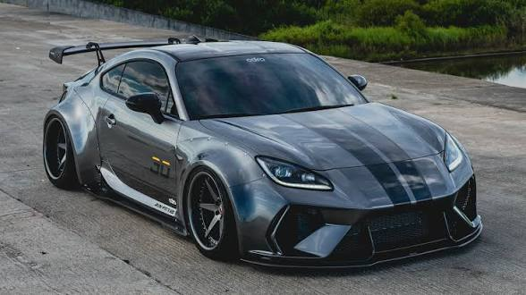

The toyota gt86 also known as scions FR-S is a lightweight
rear wheel drive sport coupe joinently developed bt toyota and subaru
The number "86"comes from famous AE86 corolla .
it also refer to the engine's 86mm bore and stroke
The gt866 was launched in 2012.it was inspired by the classsic AE86
Toyota ans subaru worked togrther to create this ironical car
thats why ther is a
replica with a subaru logo known as subaru brz